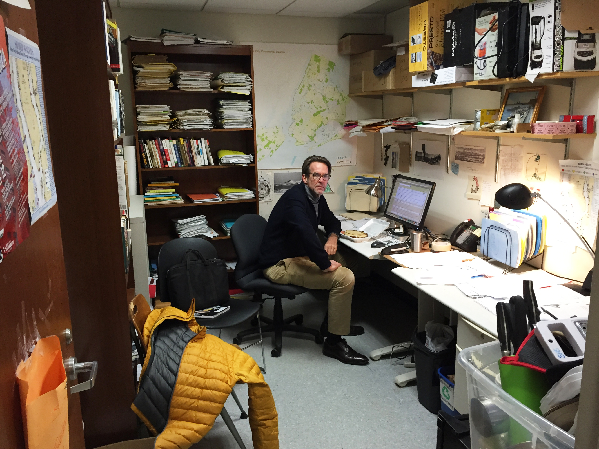

Office Space
Annelise McGough

Located in the dark depths of the 11th street Lang building is a rectangular room where the
tapping of fingers on keyboards echoes through the space. One wall is lined with a bookshelf
and the other, a long grey desk scattered with pens, papers and a laptop. The walls are a leaky
shade of grey and the lighting resembles that of a hospital's, a sharp, cold white in a hollow
windowless space.
This office is home to Journalism + Design professor, Rob Buchanan. “If you asked me whether
I could have an office with a window in the new building or the basement here, I would choose
office with a window,” Buchanan said, gesturing to his cell-like office.
The new building he is referencing is the $353 million University Center that was built and
opened in the fall of 2013. Described as being the social hub of the New School, the UC is
primarily the home to Parsons students, with over 100 Parsons classes being offered in the new
building in comparison to the 30 classes offered to Lang students.
What the University Center does not offer is faculty offices. There is not one faculty office
located in the 375,000-square-foot building nor is there any administration offices either.
Vice President for Design Construction and Facilities Management at The New School, Lia
Gartner said the new building was primarily built for students, not faculty. “From the beginning,
the new building was meant to compensate for the university's shortage of communal, public,
social, unscheduled spaces and to provide instructional space needed for academic programs --
primarily a building for students.”
The UC is equipped with a number of facilities for students, including a cafeteria, an auditorium,
multiple computer workstations, a library, open spaces for working and meeting, 58 classrooms
and a quiet study room. The top eight floors is also home to Kerry Hall, the most recent addition
to the University’s residence halls.
But the number of facilities offered for faculty is much lower. Offered to the 2,000 part-time and
full-time faculty members of the whole university, the UC houses a faculty and staff lounge as
well as a faculty center.
Katayoun Charmany, Lang Maths and Science professor, replied over email to an informal
survey sent to 35 randomly selected faculty members across the University. One of the
questions was in regards to how she uses the UC faculty space. “[I use it for] eating and grading
and socializing.” Responses from the 13 out of 35 other faculty members who replied were
similar, stating they use the space to eat and meet with other faculty.
Access to the faculty lounge is only available to professors and other staff, but according to
Buchanan, the space leaves much to be desired.
“There’s an open space where you can go and work and there are work stations. There’s a
room with glass walls where you can make private calls.” Buchanan used air quotes when
describing private calls in a glass room. “There’s nowhere to put your stuff. I want to be in a
place where I can put my stuff, and have my books.”
Over four years ago, when the planning for the new building began, TNS brought in outside
consultants from IDEO, a design and innovation consulting firm, to help coordinate a University
wide decision making process around what the UC will provide the community. According to
Michael Joy, Director of Campus Planning, it was a lengthy process in which community wide
meetings were held every month for almost two years.
Joy said that in order to make the process truly “community wide” the University Facilities
Committee was formed in order to make sure that representation from all areas of the school
were involved. “Everyone was invited to the design planning meetings. Deans of the various
schools would elect representation or suggest who be invited. It came from the schools who
exactly should be at the meeting.”
But Joy says that representation of the community went further than just faculty in the
University. “The architect met with stakeholder groups throughout the design development
process to get specifics. So, they met with the library representations, they met with faculty
from the design schools and the research schools. They met with food services and security,
IT, sustainability and all those little layers. They had exposure to the community at large to give
their feedback.”
Joy said that the meetings usually consisted of the members of the committee looking over the
designs that the architect had sent over. They would give their feedback and suggestions and
send it back to the architect who would then take their comments into consideration and send
back an updated version of the plan the next month.
Buchanan, who was part of the committee, said that community members suggested easy-
access bike racks, a large workout facility, and of course, faculty offices.
In the initial floor plans of the UC, found on the school’s website, floor 4 was supposed to house
13 offices. While those offices do exist, they do not belong to faculty but rather are career
counselling offices.
But Gartner seem to see it differently. When asked why there were no faculty offices included
in the buildings design, Gartner replied, “The building's design contemplated the presence in
the building of the faculty involved in teaching there and a space was provided to support their
activities there temporarily, rather than the kind of permanent working homes that are private
faculty offices.”
Many faculty members seem to disagree with the idea that an open working space is an
acceptable alternative to an office. A faculty member who declined to comment on the record,
said, “Private offices for full-time faculty are an essential part of the academic infrastructure of
the university. To create situations where faculty are disincentivized to use their offices (sharing,
no windows, restricted access times, etc) is to undermine the sense of intellectual community
and intellectual and pedagogic production at the university.”
This anonymous faculty member has an office located in the Lang 12th Street building and
rated his/her office a 3 out of 5 on a scale of satisfaction with the space. Despite being relatively
satisfied with his/her own office, the faculty member had a lot to say about how the university
treats the situation as a whole. “Currently, faculty feel like they are being increasingly forced into
sub-standard arrangements with a negative impact on their research and teaching and on the
sense of community at the university. There is great inequality in the way offices are distributed.
This should not be a race to the bottom. All full-time faculty deserve private offices.”
Similar opinions were shared by another anonymous faculty member who said he/she DITTO
did not have a office despite being a full-time faculty member. “The lack of office space makes
me feel disconnected from the school and my students.”
The lack of office space is not only an issue for Lang faculty. There isn’t a single faculty office in
the new building, meaning some Parsons professors are left stranded in open space.
David Carroll, Parsons professor of media design, is lucky enough to have an office in the
79 Fifth Avenue building, which he describes as having great views but no privacy since he
shares his office with other faculty members. When asked what he thinks the university can do
to address office inequities, Carroll replied in an email saying, “More shareable (not shared)
private office that can be booked on short-notice for short-term use. Basically, AirBnB for faculty
office for when you need a quick place for private, sensitive conversations. That’s when shared
and public spaces fail to serve our needs.”
While the issue continues to be a point of contention between faculty and administration,
there has been small steps taken towards addressing the issue of faculty offices. Riva Kadar,
Associate Dean for Academic Planning at Lang, is responsible for faculty office allocation and
said that a survey was sent to all full-time Lang faculty, “to get feedback on developing an office
space rotation policy.” Kadar said feedback is currently under consideration and no plans to
execute the policy have been set yet.
In regards to the lack of offices in the new UC, Kadar replied in an email saying, “My
understanding is that the new building was never intended to provide office space for Lang
faculty. Lang has never had enough office space for all its faculty to remain in single offices and
to not rotate newly hired faculty into offices of faculty on leave.”
While it’s clear that there is an obvious office space problem, Gartner made sure to point out
that, “None have expressed to me dislike of the space, nor have I heard complaints conveyed
by others. I would welcome feedback of any kind and we are prepared to continue to improve
the space with specific feasible suggestions.”
But despite what Gartner says, there is obvious frustration amongst faculty over the lack of
attention to office space. One of the anonymous faculty members ended by saying, “The
university needs to take faculty office space more seriously.”